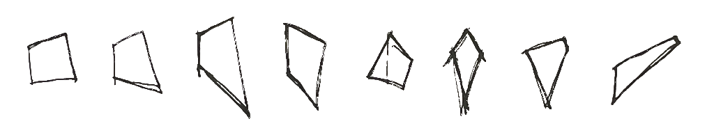
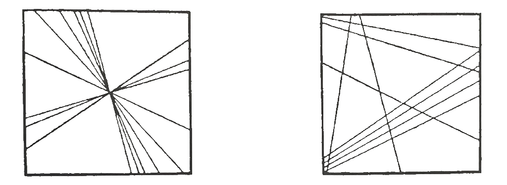
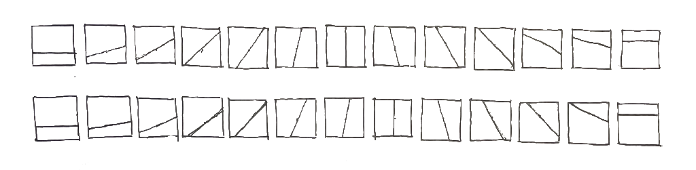
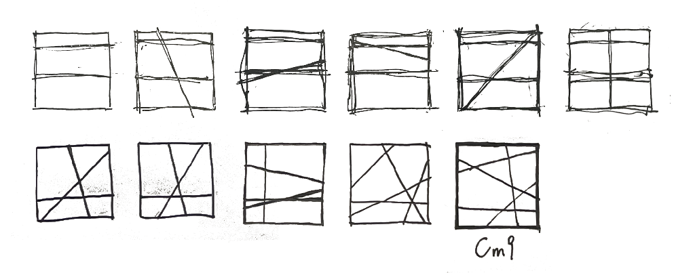

浅试音乐转译建筑
2023.1.12 - 2.17
2025：后续见‘Visualizer - 音乐视觉 建筑 *轴分析*’
2023.10.18：见如下网页：（2024.4-5有若干更新）
musicgraph5-internal 音程 断续返回
musicgraph5-log 对数 断续返回
musicgraph6-angle-long-90 对数 八度均匀连续 八度=直角
musicgraph6-angle-long-90-nrpt 对数 不均匀连续 八度=直角
musicgraph6-angle-long-180 对数 均匀连续 八度=平行
musicgraph 向上
musicgraph3 断续 视觉连续 各八度距离不等
musicgraph4 向右
musicgraph7 单八度
这篇文章最初没有做好规划提纲，因而篇幅逐渐失控，也拖得过久了。现在，出于对继续前进的需要，它必须终结，我只好改而作出如下总结性的概述：
1 上学期的任务书题为“定制化艺术空间”，我借机试着多考察了一下“音乐-建筑转译”这个主题。从和声学中也许可以获得对建筑空间编排的启发，找到一种更为严格的规则。
2 在作业中，我基于角度制定了一种从音符到图形的转译规则（详见残稿）。但很难说视觉认知和听觉认知在多大程度上遵从相似规律。
3 事实上，音乐和建筑的信息结构不同，或说音乐和建筑不同构。其一在于音乐具有一个时间维，那为音乐带来了体验的顺序性和单向性；其二在于建筑的信息复杂度较音乐更高，建筑语汇较音乐语汇更丰富。
·所以，可以说严格的音乐-建筑（空间）转译是不成立的。（因此也不能说建筑是凝固的音乐、音乐是流动的建筑。） 但建筑往往可以包含音乐（只是不能整个地等同于音乐）。
· 次要差别：音乐信息量通常比建筑大。这一层上，建筑往往更接近于 ambient music 而不是交响曲。
4 几位前辈：
康定斯基。他的画作和音乐本来就有很强的关系，而且他还是勋伯格的好友。康定斯基希望在绘画中像音乐那样表达人的内在精神，《点、线、面》就是他研究抽象图形构成的成果著作；
伊阿尼斯·泽纳基斯 Ianis Xenakis。他是希腊人，曾参加过二战，之后在勒·柯布西耶的工作室中作为工程师工作，参与过的项目包括马赛公寓、拉图雷特修道院和飞利浦展亭（可谓是音乐与建筑交叉处的传奇之作 ）。在此期间他跟随现代主义音乐大师梅西安（Messiaen）学习，后来也成为了一名重要的现代主义作曲家。这篇文章应该很有帮助，下附1中有我做的几段翻译，其中提到了来自泽纳基斯和柯布西耶对音乐与建筑之关联的不同看法；
丹尼尔·里伯斯金 Daniel Libeskind。早年学习音乐，之后一直受此影响。他的《室内乐》系列等提供了重要的参考。音乐性作为考察他作品的一个视角似乎是有效的。其母的话：“在建筑中总是可以表现艺术，但是在艺术中无法表现建筑。”与前述信息结构问题的关系。
柯布西耶的模度系统是等比数列。十二平均律（音乐中通行的调律规范）亦是等比数列（公比为2的12次方根）。《模度》开篇有提及对音乐的参考。
· 不止如此，实际上，这是一个巨大的课题，古今有很多讨论，我没有能力充分列出。如文艺复兴时期音乐和建筑几何等的关系十分密切、许多哲学论述中也对之有涉及。
5 音乐作为一种艺术形式，最重要的特点是其形式秩序的高度统一。作为和声学讨论前提的和弦，各音频率之比（音程）是唯一参量，响度、音色、节奏等不纳入讨论。（在声音中亦有乐音和噪音之分，只有频率明显的声音可视为乐音。）
· 对于一个非音响的作品，越是简洁、秩序规范越是恒定，就越接近音乐，或越具有音乐性。例如，对三角形而言，除去整个形状的大小（尺度），将只有三个角度，它的信息结构与和弦相差不大。
· 对于任一高度统一的形式系统，也许出于感官不同而在作用效果上不相似，但也许它们都像音乐中存在和声学一样，也具有某种动力规律。
6 音乐性也许可以作为一种形式分析视角。例如一个剖面或平面为长方体的空间根据D/W/H而具有不同和音、为三角形的空间也具有某种和音。而它们可能是平和的、“刺耳”的，等等。
· 来自现代主义音乐的启发：无调性、微分音乐、噪音、沉默。这样来看，现代建筑的确往往对应了现代音乐。
（ 7 对音乐之时间性的特殊看法：音乐中的时间的确是单向、顺序性的么？总的来说，对人而言，时间的确是单向、顺序性的么？
来自认知科学的启发：空间对信息的综合（统合，使动词）作用、空间与记忆的强关联——记忆连续性和空间连续性的关联。时间连续性和空间连续性的关联？（有时我们说，仿佛我们从未离开一个地方、等等。）曲式可否类比于空间组织模式？段落的重复，可否类比于具有分支的流线？
（对应柯布西耶：“向眼睛强加的历时的感知”——基于眼动的音乐性：）重复的主题、移调、模进、逆行等，可否类比于不同视角下的同一建筑空间？这样看时，可以说赋格是建筑性极强的音乐形式 。）
8 但是，例如：一个音乐厅本身是否应该是“音乐”？帕拉斯玛：静默。
建筑何必要有声音？反向的极端：绝对“无声”的空间，例如纯粹的柱网。建筑作为《4:33》。
附1
在以下的两段中，可以看到，拉图雷特修道院的几处立面是货真价实的“音乐”，它恰恰是柯布西耶交由泽纳基斯设计的，这里详细介绍了他的处理思路：
「泽纳基斯对节奏模式的研究，被证明在对覆盖着拉图雷特修道院立面的、著名的“波动起伏的玻璃窗片”的设计中非常有用。自相矛盾地，这一备受称赞的特征源自于一个对实际问题的节约经济的回应。为了利用俯瞰山谷的宏伟景色，勒·柯布西耶将修道院的西立面考虑为一个“开有窗户的外表皮”。然而有限的预算不能支持昂贵的大片玻璃面板。对这一问题的解答来自昌迪加尔：在那里，印度的石匠实现了大片玻璃的分隔——通过在均等间隔的竖直窗框间将不同高度的、更小的玻璃面板一片一片垒起。意识到相同玻璃片的无尽重复将会形成一个乏味的立面，勒·柯布西耶请求泽纳基斯戏玩于混凝土窗框间的距离，以此为立面带来非对称的外观。与他组织《Le Sacrifice》中速度发展的方式相似，泽纳基斯首先实验了对一系列不同宽度的窗玻璃片的排列组合，以获得特定的节奏动机。然而不久后，他再一次面临了排列组合技巧的极限：受到过度限制的元素数量造成了一种枯燥且可预料的构图，而太多的元素令在美学上控制最终的配置成为是不可能的。
此处泽纳基斯有了一种将会被证明是对他进一步作曲方式的巨大贡献的直觉：他在一个更总览的层次上考虑了这个问题——高于单独的元素——通过将韵律的概念替换为密度的概念（在“每段时间或每单位长度中事件的数量”的意义上）。比起考虑竖直窗框间各自独立的距离，他现在在立面中分出了区域，在其中，每单位长度里，高些或低些数量的窗框将被需要；并且 [ 他 ] 决定了这两种状态间的过渡将如何发生：流畅的或突然的。对于这个目标，泽纳基斯画出了一个，取自模度系统的，宽度逐渐变大的黄金比例矩形，的渐进的图表。现在他所要做的一切便是在立面中排列含有密集竖窗框的片段和稀疏竖窗框的片段，以此来获得所期望的起伏效果。因此泽纳基斯创造了一个三层编排的竖直向复调，形成了一个细节化的多重韵律的对光和影的研究。尽管立面中的各个层次—— [ 每个 ] 相应于一个故事——有一个在其自身之中比较简单的结构，最终造成的视觉构图具有相当的复杂性。当试着跟随立面的发展时，眼睛很快开始在故事和故事之间穿行，并且迷失。这一原则——其时长之比例关系或许将在整个篇章中不断变化的若干独立层次的堆叠——将成为在泽纳基斯许多部作品中的复杂韵律复调的基石。」

[ 图片来源：Archdaily ]
泽纳基斯在此过程中应用的图表方式，在后来成为了他作曲时的惯用工具，这为现代音乐记谱法开拓了新的形式。他不久后的作品《Metastasis》即是使用图表方式创作的。
而：
「完成《Metastasis》后不久，泽纳基斯将在这个直纹曲面的范例中创造出一个强有力的建筑标志：1958年举办于布鲁塞尔的世界博览会上的飞利浦展亭。对于这个项目 [ Philips Pavilion ] ，泽纳基斯被柯布西耶授予几乎完全自由的创作权，后者主要专注于电子音诗——一部被投影在场馆内部的多媒体作品 [ 电子音诗（Poeme Electronique）同时是重要的现代主义音乐作品和早期电子音乐作品 ] 。尽管直纹曲面主要被用作屋顶，飞利浦展亭可能是建筑史上第一座完全使用这种类型的表面来设计的建筑。墙壁和屋顶流畅地相互交融，形成一个有着看似无尽之特性的流动的内部空间。飞利浦亭与《Metastasis》图形谱面间的相似却 [ however ] 超越了形式层面。两个作品可以被看作同一理念——即，两无关状态间的连续过渡——的两个不同 [ 形式 ] 本体。在音响空间中，这一情况由同度和音 [ 齐唱 ] 向声音簇 [ 大量不同音同奏 ] 的发展来表达，而在建筑空间中，这通过将水平表面和垂直墙面融合来表达。
不仅设计了展亭的建筑，泽纳基斯同时也以作曲家的身份对飞利浦项目做出了贡献：他的序曲《Concrete PH》在电子音诗的两次放映间通过300个扬声器被广播。尽管在一个用双曲抛物面创作的建筑中使用滑奏的想法富有诱惑，泽纳基斯却选择了一种“点描法”的方式：他混合了阴燃的煤的声音片段——作品中唯一的声音素材——以产生出一个引人遐思的，不断变化、具有无限微小细节的声音云的世界。我们能由此推知，泽纳基斯并不真的对建筑的音乐“翻译”感兴趣，反之也同样。实际上，如他所述：“我们有能力同时说两种语言。一种针对眼睛，另一种针对耳朵”。在这一视角下，将同一信息传达给不同感官将造成一种冗述。与之相对的理念，即一种视觉感知与听觉感知的完全分离，将成为之后《Polytopes（多面体）》——在其中泽纳基斯传达了他个人对整体艺术作品之理解的巨大抽象声光装置——的关键概念。
另一件事使我们能更好地领会泽纳基斯对于音乐与建筑之间关联的理解：当勒·柯布西耶说到“音乐性的玻璃窗片”，泽纳基斯却更喜欢“起伏波动的玻璃窗片”。其中区别是巨大的：它表明勒·柯布西耶与泽纳基斯对建筑之“音乐”特性的分歧的观点。据勒·柯布西耶说，建筑通过对运动和对体量与空间的连续感知的概念和音乐相连。换言之，拉图雷特立面的“音乐性”存在于其向眼睛强加的历时的感知。强调着这个立面的“起伏”性，泽纳基斯——相反地——感兴趣的不在对这一动态方面的感知，而在其下隐含的结构。相比于效果，他更关心原因，即密集程度的变化。」
残稿:
引
在音乐写作中，普遍有着对某种较为具体的（形式）理论——即乐理（音乐理论，尤其是和声学，其随时期等而不同）——的遵从。在一些规则中，有时甚至可以根据前后文推算出空缺位置中音符的全部合理选项。对于建筑空间，不同形式当然也有不同效果，但在这里并不像在音乐中那样强调严格的理论制约。
「 10.17：
（11:37 在北馆大厅休息，正要做景观的栏杆）
空间就是和弦？！！ ——天窗、高窗、侧窗、长窗、三角形、长方形、正方形、
建筑可是凝固的音乐啊。
听2019春
音乐中有重力么？！
旋律的上行下行。
起承。
承。
有趣的是，和声学也讲功能
主、属、下属。
八度音有穿透力，就像 xx 那天的前后都是玻璃。
万事万物皆相连的原因是，人的认知方式是可以同一且多用的 」
如此这般，可以看到越来越多音乐和建筑之间的相互映照。这于是引发一种对更严格的空间形式理论之梦想。建筑并不是一门比音乐历史更短的学问，为什么我们并没有总结出那样具体的规律？
下半学期的任务书题为“定制化艺术空间”，我借机试着多考察了一下这个主题。在题目允许范围内，我选取了一首完整的乐曲（贝多芬大赋格，但本文将不讨论这首曲子本身）作为音乐方面的蓝本，并直接决定进行从乐曲到建筑的（一一对应的）转译。如今来看，“音乐转译建筑”在可行性和合法性上都应该受到质疑，但若不是尝试了一种极端（甚或偏执）的做法，这个道理便未必会这样清楚地显现。
「其实米罗和Beethoven之间……我仍自觉音乐转译是做不太好的，但私心如此，且之前“建筑和声学”已呼之欲出了，另外，哪怕再做个几周呢！见到死路再回头。」
如本文的题目，我自己所做的工作并不太深入。最初我也没有认识到这个选题背后其实涉及一个宏大的课题，所以没有进行专门针对性的的文献阅读，而是顾自根据我现有的知识进行了尝试。这更多是一篇学习笔记，我将简要介绍我的成果，然后逐一介绍在此过程中我接触到的那些前辈们，以及在他们启发下的思考。
一个音符-图形转译规则 - 上
严格的转译首先就要求音符的对应，这指向一个通用的转译规则，在理想的情况中，这种规则也能直接支持（涌现出）和弦的表达（我的和声学知识非常浅薄，所以我也希望这种对应自动完成）。对于任一音符，尤其重要的一点是，单论音高，它仅仅就是频率，而和弦则就是不同频率（关系）的叠加。与此同时，十二平均律作为最普遍的调律规范，也成为一项关键标准，它要求这个转译规则在图形方面包含的全部可能形式，其数量应为12的倍数，且其相互间存在某种“平均”的关系。
自然地，我以正方体作为基础，考虑单个空间在形式上的可能变化模式（即形式操作手法）。早先我想到过开洞的方式，例如也许不同音符可分别对应于“天窗、高窗、侧窗……”，但这似乎过于复杂，或许是其中需要考虑的方面太多（即使限定开窗形状为矩形）——开洞的面，在该面上开洞的位置、方向、比例——这与音高表征的简洁性相悖。
确定题目的那节课后，当我想到大赋格是一部弦乐四重奏——我想起“四部和声”这一概念（“用四个声部陈述的和声”），“不规则四边形”的图像继而出现，它立刻引起了我的注意。
（图片：四边形筒）
忽然间所有的事情都明朗起来：不规则的四边形，各相邻边之间成不同角度——角度。如何……三百六十度——360度！360除以12…时钟！15度。音程。转位呢？比方说小三度和大六度——四边形内角和为360度！补角！（见鬼！）不，那叫……
——好吧，谁管它呢！
很难不从这样一些图形中感受到和声般的气质：
看到了希望，便试着把它的细节确定下来。
纯八度、小二度、三全音分别对应于什么角度？逐步扩大的音程对应的角度也逐步扩大么？两相邻音对应角度的间隔应该是15度还是以2的十二次方根为底的等比数列？四个声部上的主音，它们之间是否应该、是否可以偏转90度——或者说，当四个声部同时奏响主音，其对应的图形是正方形么？如果偏转，如何维持音程对应的同一性？
——小二度极为不和谐，而且音高相近，理应为最小的角度；八度则似乎该是平行，180度——或者360度？五度是直角么？360度等于2π！那么2:3是……1.5π ，270度？三全音（传统意义上的不协和音程——有趣的是，三全音中两音频率比例为白银比）又如何？最小的角度？还是……几乎是直角？……如果取一个等比数列，第七个音便落在直角（或平角），可是大七度和小二度将不能形成补角（或余角、等等），而且等比的角度关系在空间中很不明显；如果只是将周角或平角均分为12份，又把直角分配给五度——那么四度呢？三全音呢？——必然有一个角度是三全音的补/余角。
……
我多花了一些时间反复对比，这般仔细的考察，忽然让我联想到一本小册子。
康定斯基：《点、线、面》
后来这学期有两三门课分别提到过康定斯基，我才了解到他的画作和音乐本来就有直接的关系，他而且还是勋伯格的好友。康定斯基希望在绘画中像音乐那样表达人的内在精神，《点、线、面》就是他研究抽象图形构成的成果著作，仿佛为了让这种缘分显得更强烈，康定斯基在导言中写道：
「就分析研究方面而言，相比于其他艺术形式，绘画处于一种奇怪的地位。譬如建筑，因其固有的实用性，必须讲求一定程度的科学严谨，所以理论分析就势不可少。而抽象的音乐艺术虽无实际用途（进行曲和舞曲除外），乐理却也早已有所发展，目前看来虽还不够完善，至少也在不断推进。建筑和音乐，虽形式迥异，却都有自身的科学理论基础，似乎也未见不妥。与它们相比，其他艺术门类的理论研究多少显得有些迟缓，似乎总落在艺术本身的发展之后。」（本节所引文字均来自重庆大学出版社出版的《点、线、面》，余敏玲译。）
当然，这里他提到的建筑理论意指的是实用性方面，并非对空间形式的分析。而他在这本书的正文中将要阐述的内容，则恰是针对平面形式构成法则及其效果的探索。这就是我想寻找的参考，我想知道他如何看待斜线和角度。
直接翻到“线”一章，他首先讨论单条直线：
「直线的最简形式是横线（水平线）。印象中，平日我们来一行走站立的路径或者台面，都是水平的。横线冷静而平稳，可以向四面八方延伸。横线的基调是冷静、平直，可谓无限冷能的最简形式。
内外角度看来均与横线相反的，则是与之成直角关系的竖线（垂直线）。竖线的纵深对应横线的平直，其温暖则对应横线的冷静。竖线是无限暖能的最简形式。
第三类基本直线则是对角线。顾名思义，对角线出于横线和竖线的对分角，对两者的倾斜不偏不倚，这也决定了对角线的内在基调会是冷热均衡。对角线是无限冷暖能的最简形式。」
「在一个既定平面上，不规则直线可以同轴，也可以不同轴。」

（图自原书）
然后是角线：
「角线由直线构成，它由两种直线的力挤压而成：
最简单的角，由两部分构成，体现出两条直线的力在某个角点上的折止。这一点也体现出一般直线和角线之间的重要差异，即角线与平面的关系较为紧密，甚至已经带有平面的某种特征。可以说，角线是通往平面的桥梁。」
「此外，一条角线之间的区别还在于各部分的长度，这也对形式的声调有极大影响。」
这里提到了一个挺大的问题，当我拿后来做出的原型询问身边比我乐理了解得更多些的同学时，他们的判断还是受到线的长度、高度等的影响。这会影响表达的纯粹性。
「既定的角线形式，其本音由以下三种声音条件决定：
直线的声音，会因方向和长度等因素变化而变，前文已详述
角外的张力音，会因外角度的尖锐程度而变
角内的合力音，会因内角度的覆盖程度而变」
「三种典型角中最客观的是直角，其基调也是最冷的。同一顶点的直角可以将方形分为四等份。
锐角 [ *指45度角 ] 的声音最为尖刻，亦最为温暖。同顶点的锐角可将平面一分为八。
当直角不断扩大，其张力便不断减弱，而覆盖倾向却相应增大。这种扩张始终局限在钝角内，而钝角也无法精确地分割平面，因为平面被同一顶点的两个钝角（135度）占据后，余下的不足90度部分，并不足以让钝角进据。」
「 I 锐角的声音，尖刻而活跃
II 直角的声音，冷静而克制
III 钝角的声音，迟拙而消极 」
在最后，他谈到线的组合：
「简单的线条重复，可以将间距相等的直线并置，形成原始节奏，或者递增间距，或将间距打散。
以上第一种情况所体现的不过是量的强化，这好比音乐里用几把小提琴同时演奏同一乐音。
第二种情况，随着量的强化，也出现质的强化。这好比音乐里一个乐拍在长时间打断后重现，（…）」
一个音符-图形转译规则 - 下
最后，我筛选出这样一种方案，它包括两个变式：

首先，横线成为一个绝对基准，它即是主音，对于一个从主音开始的八度半音阶，每个音高对应于一条与基准线成一定角度的直线，12（13）个音连续对应增大的角度，直到纯八度——它被规定为180度平行。当任意数量的音同时奏响时，根据其与主音的关系选取出规定角度的直线，它们之间在同一平面进行组合，构成和音。这一八度内，对各音高以不同方式规定其角度，形成了两种个殊的变式：
第一种，相邻角度的值为等比数列（q=2^(1/12)·π）。这里五度对应了直角，大三度对应了45度，这看起来很好，但其实存在不小的问题：所有的转位将都无法做到对应，它们都不具有互补关系。但如果考虑到在听感上转位音程、转位和弦仍存在一定差异，那么也许也就不必再执着于“补角”了。
第二种，半音程均为15度。转位音程的表达得到了保证，而分歧是三全音对应了直角，四度、五度对应了75度和105度。在作业中我选择了这种方案，也就是说我愿意接受将垂直视为一个尖锐的音程——其实在如此考察之后，我甚至几乎完全同意直角就是“不悦耳”的。想象一个等腰直角三角形，那就是第一种变式中的大三和弦。大三和弦听起来像是一个等腰直角三角形么？
由于线可延长，360度的角度空间也就被这一个八度音阶全部占据。对其它音区中的各个音，以及余下一些音素，如音长、强弱，我没有完成确定的区分，但可以考虑通过线的粗细、质感（对于构筑物来说是杆件的材料）、间距、线形等等来表达。
图中，每个图形都是一组和音，其中第二行前两个图形分别对应了小调和大调的主和弦、最后两个图形对应了小九和弦。
在作业中，对这一规则的迭代我做到了这里为止。如果斜向秩序能与建筑的本体特性良好相容，那么这里其实就建立了一种含有12个角度的非正交秩序，及其一定的内部规范，这可以用来设定建筑中的轴线等。
此处需要对音符-图形转译的直观性进行讨论。《点线面》关于线的那章最后还有这样一段话：
「尤其有意思的是，如今通行的图形化音乐记录方式即五线谱，本身就是点和线的不同组合。（…）五线谱用极其鲜明的语言，将最复杂微妙的声音现象转译（translate）出来，经过视唱传递给训练有素的乐耳。」
（视唱，是音乐学生的一项基本功，它要求学习者能够在未聆听乐曲时准确唱出谱面上的内容）
在“音乐-建筑转译”中，我们所做的究竟是形式效果的直观再现还是给出了一种“记谱法”（康定斯基所谓的转译指的是记谱法）？也就是说，一个转译规则达到的直观程度，是否足够远离了单纯的结构映射？这里是仅仅缔造了一种视唱规则还是真正促成了“通感”？——视唱是否就是通感？对于通感而言，它是，还是仅仅形成了紧密的（隐喻性的）连接？——这种连接是先天的，还是后天的？
实际上，就连对于音乐本身，这一点在20世纪以来也受到了（猛烈的）挑战（故而说，以上全部内容仅仅基于传统乐理），不过那是针对声音和听感之间的联系。最后我们还将看到，上面得出的系统同样可以如音乐本身在20世纪中的发展那样被打破。
在这一阶段，就我个人而言，对于这个角度系统，我已能清楚地体验到类似视唱的感觉——我可以唱出或奏出一个三角形。当我看拉图雷特的多边形天窗时，我仿佛看到了那个和音（最不乐观的情况下，这确实是一种精神污染）。至于“形式效果的直观再现”，我会说：似乎多少真有一点，但它是有限的——毕竟横线作为主音、平行作为八度、最小角作为小二度，其中的客观依据能够支撑起它们的生动性，但，视觉（审美）认知和听觉（审美）认知，难道遵从同样的规律么？那似乎不太可能，以上对康定斯基的引用，实际上是断章取义的，在他对图形艺术的完整讨论中，并没有形成和音乐听觉绝对相同的局面。
但是，就算以上的这一对应是不合法（无厘头）的，这一点却不会有错：就像和声学一样，在12角度系统中必然存在某种动力规律，无论这种规律是否和音乐相同。而也许，在任何秩序系统中都存在着动力规律。
大致确定下转译方案后，我才仔细搜索了有关音乐-建筑转译的现有研究。最早是这篇*学位论文（及通篇复制之的另一篇学位论文）向我介绍了两位重量级人物：Ianis Xenakis（伊阿尼斯·泽纳基斯）和Daniel Libeskind（丹尼尔·里伯斯金）。
*《基于音乐美学的建筑生成系统》（其实践部分比较潦草，但文献部分很充实（但不扎实））
两张来源不明的图片：“黄健翔 现代建筑形态语言与古典音乐构成法则比较研究”。搜索无果。
伊阿尼斯·泽纳基斯 Ianis Xenakis
泽纳基斯是希腊人，曾参加过二战，之后在勒·柯布西耶的工作室中作为工程师工作，参与过的项目包括马赛公寓、拉图雷特修道院和飞利浦展亭。在此期间他跟随现代主义音乐大师梅西安（Messiaen）学习，后来也成为了一名重要的现代主义作曲家。
这篇文章详细介绍并分析了泽纳基斯的创作思想：
我将冒昧从中引用一些段落（从长度上看是过分了的），并作翻译。
（此处见残稿前附1）
这些段落首先向我们展示了飞利浦展亭（它可谓是音乐与建筑交叉之处的传奇之作 ）与泽纳基斯自己的作品Metastasis之间的关联，随后梳理出了泽纳基斯对音乐-建筑的看法。对我来说有两点很关键，其一是这句：“在这一视角下，将同一信息传达给不同感官将造成一种冗述。”后文将重提；其二是，这里说到泽纳基斯“对于音乐与建筑之间关联的理解”。需要澄清的是，以上引文中的这一句：“泽纳基斯并不真的对建筑的音乐‘翻译’感兴趣”，上下文中的实际情况是，展亭内需要播放音乐，此处“对‘翻译’不感兴趣”指的仅是，播放的音乐应不同于视觉体验的内容。第三段才真正谈到了泽纳基斯如何理解音乐和建筑的关联。就飞利浦展亭本身而言，它恰恰是建筑可以与音乐能够具有这种关联的例证，但是，我们看到，这种关联所依赖的同一性，并不在二者“之间”（音乐-建筑转译直接依赖的却是其之间的同一性），而在于“其下”，即另外的相同本源。在飞利浦亭中，这就是“两无关状态间的连续过渡”，而那某种意义上也就约等于直纹曲面。飞利浦亭不是Metastasis的转译，Metastasis也不是飞利浦亭的转译，它们只是直纹曲面分别在建筑和音乐中的展现。这与文艺复兴时期的观点相同。
值得注意的是：同为斜线， 在《Metastasis》中，是音高随时间的函数，在上文提到的我的规则中，则是单个的、频率确定的音符。似乎并不能说哪个更“正确”，反而，对其的诠释似乎的确是多重的。这从另一个角度体现了视觉认知和听觉认知的差异。
[ 几周前，某节选修课后，当我向老师问到对将后道路的选择时，在霞光中他转过头来，背后是敬业湖，瞪着他那巨大得几乎要爆出来的眼珠，说到有一位作曲家也曾是建筑工程师。当时我没有记下他的名字。如今我才知道，这就是泽纳基斯。]
丹尼尔·里伯斯金 Daniel Libeskind
考虑到方案最终可能会具有叙事性，我在任务开始阶段也选取了柏林犹太人博物馆作为参考案例。没想到，它的建筑师里伯斯金也和音乐有着密切的联系。对他的生平及创作理念的介绍在网上较易搜索得到。
总的来说，他早年也学习过音乐，并且也许本会成为一名音乐家。在他自己的书《破土》中，他说：「」。在后来，他和音乐的这种联系也体现在他的建筑中。
最引人注意的便是他的这组绘画作品：《室内乐》。

斜线又出现了。
这些作品实际上以不同思路回应了两个问题，即音乐和建筑之间，时间性的关系和语汇秩序的关系。
在这里可以做一个有趣的并置：康定斯基的《》、里伯斯金的《室内乐》，以及泽纳基斯的乐谱示意图。
《点线面》谈论线的那一节开头附近，还有这样一句话 ：
「世上所有内外现象，都能以线的方式来进行某种抽象表达，不妨把这叫做线的转译作用（ translation ）。」
音乐和建筑的信息结构
在之前，已介绍了一种从音符到图形的转译规则。剩下的任务是参照这一图形规范，将乐曲完整地转译为建筑空间。这里马上就会遇到巨大的困难。
在追求一一对应音乐-建筑转译中，一方面，我们希望转换出足够丰富的空间；另一方面，我们希望这种丰富性“有据可循”。在某种程度上，这两股力量相互矛盾。做这个训练项目时，我恰好借来了侯世达 [ Hofstadter ] 的《哥德尔、艾舍尔、巴赫：集异璧之大成》。这是一本声名遐迩的数学科普著作，它的主题之一是形式系统，并也恰好涉及了音乐。我只读了开头的一小部分，其中第二章的这一节题为“同构产生意义”：
「 … 在导言中，“同构”这个词的定义是保存信息的变换。现在我们可以深入到那个概念中去，从另一个角度看一看。“同构”这个词的适用情景是：两个复杂结构可以互相映射，并且每一个结构的每一部分在另一个结构中都有一个相应的部分。这里“相应”的意思是：在各自的结构中，相应的两个部分起着相类似的作用。 … 」
可以说，在一一对应的转译中，音乐和建筑便应当具有严格的同构关系，转换后的信息不应增多也不应减少。为此，我们应考察音乐和建筑两者本身背后的信息结构。
这里主要能看出两点：首先是音乐具有历时性，这是它与建筑及许多别门艺术的一个显著区别。时间为音乐带来的最重要的特征是体验的单向性及顺序性（这是两个不同的特征）。对此我们有一个被广泛运用的、简单且十分符合直觉的办法，即将时间拓印为一个空间维，我们不是会说一个柱列具有“节奏感”吗？但是，如果运用这一点，就意味着得来的建筑将只有一条纯粹序列式的流线。然而一般来说，对于实际的建筑这是很少出现的。这一区别在追求严谨的情况下可以说难以弥合，但仍存在一定的转换思路，这将是下一节的主题。
而若抛去时间这一点，另一方面，我们还可以感受到，音乐（在一刻、一拍内）的结构似乎其实比建筑更为简洁、抽象，其中的信息秩序更加统一。在保持了一定综合性的视角下，一个时刻内（一拍内）音乐的声音可被理解为若干不同音色、响度、音高（奏法包括了音色和历时特征）的音符的叠加。对应地，我们可以从一个建筑空间分析出尺度、形状（比例、角度等）、虚实（想想光！）、材料等等特性。从这些概念的数量来说我们还看不太清楚，仿佛在它们之间可以找到一种分配方式，像几节之前提到过的那样：音色可以对应于材料么？响度和音高可以对应于尺度和形状么？——现在，对此，须指出：这些概念各自背后的形式自由度是不同的，例如，“形状”仍然千变万化，相比之下，音高、响度等等，都只能为一个值所规定——它们不能再被分析了。
也许我们可以暂且以更加（也许过分）还原的视角来进行考察：想一想音乐的波形图，其中，横轴对应了时间，而纵轴则对应了作为声源的振动物体的位移，在这个意义上，音乐仅具有一维“空间”。（说空间有三维就是在还原的视角下说的；另外，请注意，这时不能说音乐总的来说是“二维”的，因为顺序性在对二维空间的视知觉中将不成立。）这样来看，倒是会得出一种确定的结论：音乐的信息结构较建筑而言就是更简单。
事实上，只要我们抛开转译这一目标来看，就能想起，建筑语言比音乐语言确实要更多样一些，也更自由一些。这种多样性往往造成“秩序规范”的不恒定，举例来说，如果我们把斜线看成音高，而一个三角形空间中如果还开有一系列比例各异的矩形窗户呢？如果还有圆形的窗户呢？如果还有不规则的弧形线条呢？让我们看看圣皮埃尔大教堂：

尝试把这里的圆洞和矩形洞解读为声音，如果圆形的直径代表了音高或者响度，那么矩形的长和宽分别代表什么呢？墙壁倾斜的角度（应该观察整个的建筑空间！）又是什么呢？红色和黄色又代表什么呢？
也许音乐的直观性恐怕就在于其构成元素的高度规范化，即具有统一的秩序，这则是由其信息结构本身的简单所决定的。
不过，好在，建筑中的“最大信息复杂度”比之音乐是更大而不是更小。尽管建筑空间的形式语汇十分多样，但这并不意味着我们不能让建筑空间保持简洁，或说纯净。实际上我们不是会常常为纯净的空间而感动么？这里也许就呼应了里伯斯金的母亲劝他从事建筑时说的话：“在建筑中总是可以表现艺术，但是在艺术中无法表现建筑”。
但这里又触及了另一问题，即，如果不是为了“转译”这一先定的要求，建筑何必要硬是要限制自身在形式上的可能性呢？一般而言，建筑何必要去和音乐保持相同的信息复杂度呢？实际上，这节至此全部的讨论，最终恰恰就否定了音乐-建筑转译的正当性，因为这两种形式存在结构上的落差，而我们没有理由去牺牲。
仅对转译这个限定的课题而言，面对这样的差异，有着三种进路：一，保持纯粹；二，拥抱（几乎必然存在的）自由；三，创造一种高涌现层次的新规则。
第一种：已经说过，纯净的空间并非一定是不好的空间。实际上，想象有一串形式上保持纯净的空间，那真的说不定还很有意思。但这里存在一个限制因素，它是以上还未提及的音乐和建筑间的另一区别，即，音乐的信息量倒是比建筑大很多：对于一首15分钟的乐曲，如果有400个小节呢？得来的建筑中将有400个房间（单元）么，其种重复着一些简洁的空间形式么？它很可能将呈现出极度的单调。
第二种：也就是即在转译所得的建筑空间中增加额外信息，以令建筑空间的可能性得到充分发挥。这种方法会好办很多，也许只有这样，才能兼顾到建筑的本性。尤其，之前的讨论中从来还没有涉及光、情感、整体氛围，这恰是进行弥补的机会。但与此同时，这也就意味着放弃一一对应的转译，意味着音乐只是包括在建筑中，而非建筑整个地等同于音乐。这亦承认了严格的音乐-建筑转译的不合伦理。
第三种：这可想而知地困难，因其依赖于对音乐对人心之作用的更深洞见。最终的方案也许会让一个音乐特征同时控制多个空间特征、等等，试图让转译规则尽可能多地覆盖到建筑空间语汇的各个方面，并且最终使得，当音乐的情绪转变时，所得建筑空间的氛围也恰好作相同的转变。其中，必须注意“一对多”关系的恒定性，否则将与以上所提二者间信息结构复杂度的差异相悖。
另外需要提及的是，对于辅助/服务空间，想必可以容忍另外安排它们而不认为这样破坏了转译的严谨性。
时间的转译
在相当程度上，任何试图打破音乐顺序性的尝试都是僭越的。
我们先来看看里伯斯金《室内乐》中的另外这一幅，其中的元素大约沿一条直线排开，这条控制线就类似于单向度的时间：

（应指出其中的一些小误差（，也作为上一节内容的又一个例子）：即使这幅图中几乎全部由直线构成，尾部却又出现了自由曲线，我们似乎倾向于在自由眼动（这破坏了时序的唯一性）中把斜线理解为固定的音高，而在“顺序的”视觉中把尾部的曲线理解的悠扬的滑奏旋律。这里就发生了认知方式的不统一。即便如此，这已经是《室内乐》中在结构上最接近于音乐的一幅了，这里甚至还不涉及色彩，里伯斯金似乎并没有彻底执行（他本可以去做，这组绘画的宽高比和复杂度都连续变化，可以说覆盖了这整个图谱上除了端点的各个位置）与音乐的同构。）
如果我们大致依此想象一个笔直的通道——将画面中的元素以各自不同但有序的方式置入立体空间（也许对每个元素另设置一系列角度，等等），那么几乎可以说，这就是一个由音乐转译来的建筑（空间）了。其中，信息的数量和复杂度都十分相近，而且时序性得到了很好的保持。
这里，另有一点尚还有讨论的余地，即对这一序列式空间进行弯折。从拓扑的角度来看，这完全可行——总归都是一条线。但是拐点的处理将较为困难，应额外建立相应的规则。以前文所提的角度系统为例，这可能是在转调时根据两调主音间的音程差令流线转折相应的角度。即使找出了对应的规则，也很难说拐点不会破坏“时间”的均匀性。
到此为止，我们可以说已经涉及了严格的音乐-建筑转译中的每一部分——就到此为止了。但也像上一节中说的，这里，纯粹序列式（更何况成一整条直线！）的流线在一般的建筑中很不常见。我们在上一节中也已经看到了音乐和建筑两者在信息复杂度上的差异，凡此种种，越来越确定地，可以说从音乐向建筑的严格转译是件过分的事情。可以说只要结构不同，转译就只能是一种模仿。而凡是模仿，则都是不纯粹的、自欺的、不具有正当性的。
所以，在讨论继续前，态度应有所转变了：我们将只考察二者的相似性，从中寻找启发。
我们首先继续来看音乐中的时间，我想首先指出一件事，它的主题是空间和记忆。将给出一种转换的尝试。
这一点部分地受到来自我们对时间的体验和神经科学领域的启发。
时间的连续性、感知的连续性和空间的连续性。如此一来，时间的线性就被打破了（很大程度上，时间对我们而言就是连续性。没有连续性，时间又是什么？！）
是否有一种可能：音乐的时间结构并非一定是连续的？
赋格中的逆行，本身就在模仿“时间倒流”
绝对序列式的空间和具有分叉的空间。（人对时间的体验绝对是线性的么？当我们说“仿佛又回到了xx那时”，“终于找回了xxx”，难道某种程度上没有形成一种时间感知上的分岔回环结构？时间体验究竟是一条线还是一张网？无法拓扑？）——音乐的结构究竟是单线的还是网状的？叙事结构。此处仅为一种譬喻。曲式：呈示部
再现部是空间上的折返？
重访一个地方，就像重访一段时光。
曲式是否暗示了时间的重复？
自由漫步对时间方向性的破坏。
正方形剖面通道中，光、宽高比失去了存在的理由。
这一要求不仅强加于音符的转译中，也强加于对时间的转译中。
视觉乐器——基于眼动、即时视觉的乐器。
康定斯基、里伯斯金、柯布西耶：时间拓扑到眼动中，而不是空间秩序中。
音乐的信息量太巨大了，它不应该反映在
听觉中，我们的印象中包括当下的声音和过去的声音，而在视觉中，我们只能看见前方的物体。两种思路：一，眼动；二，展开时间。
最后，应该对转译所得建筑中人的自由行走对转换后时间的体验均匀性进行讨论。对此实际上可以采取前文泽纳基斯和柯布西耶对于音乐与建筑相通处的两种不同观点，即立于体验的相同、或其隐含结构的相同。首先，体验的相同是不可能做到的，因为不论行走还是眼动，都绝对是自由、不可预测的；其次，可以说保持结构相同已然是足够的——其中已保存了时间的客观性，这是最好的办法。
莫比乌斯与螃蟹赋格
重复次数和节点数量。
赋格的转译：倒影、逆行、对称。
重力？
屋顶的坡度并不是由视觉逻辑主导，而是由物理逻辑主导。但同时，你不能说屋顶的坡度不能给人以某种精神感性体验。仅仅到这里，整件事情就已经变得较为复杂了——事物产生的逻辑已经不纯粹了。也许大概正是因此，建筑并不是一门纯艺术。 ——不过，那么干旱地区的建筑是否更自由？或者，总的来说，建筑的自由度随气候而不同？ 平衡准则——对称。
对称法则和Jacob Collier的负和声
建筑的音乐性——聆听、或不聆听。
其它文献：柯布西耶：《模度》、阿尔伯蒂、等等
多样统一。高度的统一性：在一个秩序之下，而不是多个秩序。
建筑有声音，但声音未必是音乐，也不必是音乐。
现代主义音乐和通俗音乐相当不同。
越纯粹的空间，声音越清晰，也越有音乐性。如果秩序较强，就是通俗音乐，不然就是现代音乐。
在这种视角下，直纹曲面似乎更符合单声部的滑奏。当我们看到一条斜线时，不是
一种分析方式
一种设置秩序、考察内部动力学的方式。
回到泽纳基斯：这甚至都不是音乐，而是其背后的结构。音乐是表现这种结构最生动的方式。
很大程度上，乐理将情感分析为了紧张、和谐等等。
这里有一个有趣且引人深思的例子：我们要回想一下“十二平均律”这一概念，如果你听到两个调律不同的乐器同时演奏，那就算得上现代音乐了！
和弦和完形
帕拉斯玛：建筑的静默。
空间的复杂程度至多到和弦为止。建筑是Ambient Music，甚或4:33。也许静默超出了音乐的表达范围。或那是白噪音或ambient。
音乐的功能和建筑不同
黑格尔，认知心理学。
应该提到文艺复兴。值得注意的是：
要说音乐美是否必须向听觉呈现。不妨想想：贝多芬晚年也听不到他写的曲子。
参考文献（linked）
[1]俄 康定斯基 Kandinsky, W. 1., & 余敏玲 艺术. (2017). 点线面: = Point and line to plane. 重庆大学出版社.
[2]美 李布斯金 D Libeskind, D., & 吴家恒. (2008). 破土: ：生活与建筑的冒险. 清华大学出版社.
[3]托赫 E., Toch E., & 顾耀明. (1984). 旋律学. 人民音乐出版社.
[4]侯世达, & 郭维德等. (1996). 哥德尔, 艾舍尔, 巴赫: ：集异璧之大成. 商务印书馆.
[5]法 柯布西耶 Corbusier, l., 张春彦, & 邵雪梅. (2011). 模度: = Le modulor·modulor 2. 中国建筑工业出版社.
[7]金旖. 基于音乐美学的建筑生成系统[D].清华大学,2015.